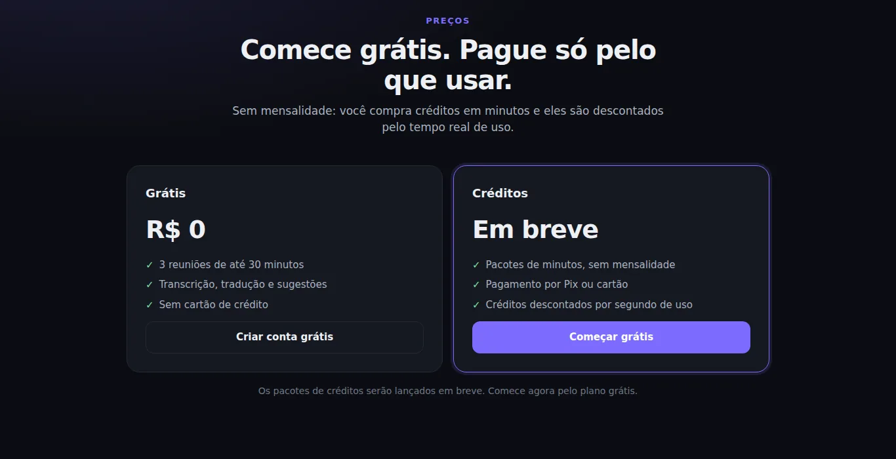
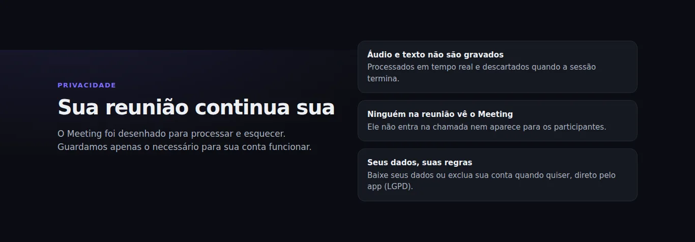

Ficha técnica
- Tipo
- SaaS web, com cliente para Windows
- Situação
- Em desenvolvimento. Contas e plano grátis no ar; pagamentos em construção
- Plataformas
- Navegador no computador e no celular; Windows
- Idiomas
- Inglês (vários sotaques) para português
Problema e público
Profissionais brasileiros participam de reuniões em inglês no Teams, no Zoom e no Meet. Muitos entendem parte da conversa, perdem o resto e travam na hora de responder. Intérprete é caro e a legenda automática só existe em inglês.
Solução
- Transcreve o inglês ao vivo e traduz cada frase para o português em 1 a 2 segundos.
- Corrige erros de reconhecimento usando o contexto da conversa e os nomes e termos informados pelo usuário.
- Gera três sugestões de resposta em inglês, com tradução, quando o usuário indica que a pergunta foi para ele.
- Funciona com qualquer plataforma de reunião, sem integração e sem aparecer para os outros participantes.
O caminho do áudio
- CapturaMicrofone no navegador ou som do sistema no Windows.
PCM 16 kHz - Fala para textoReconhecimento em streaming, com escolha de sotaque e termos-chave.
parciais ao vivo - Correção e traduçãoCada frase é corrigida pelo contexto e traduzida, em segundo plano.
1–2 s por frase - SugestõesTrês respostas em inglês, com tradução, a pedido do usuário.
sob demanda
Decisões técnicas
- Backend
- Python com FastAPI. O áudio trafega por WebSocket, em tempo real.
- Reconhecimento de fala
- Serviço de streaming com modelos por sotaque e termos-chave. Reconexão automática sem perder áudio.
- Tradução e sugestões
- Modelo de linguagem em chamadas curtas e paralelas, para nunca travar a transcrição.
- Áudio
- AudioWorklet no navegador, com reamostragem filtrada e ganho automático suave. No Windows, captura do som do sistema.
- Contas e cobrança
- Cadastro com confirmação de e-mail, plano grátis e créditos por minuto, medidos no servidor.
- Segurança e privacidade
- Senhas com Argon2id, proteção contra força bruta e CSRF, CSP e limites por usuário. Áudio e texto das reuniões nunca são armazenados. Exportação e exclusão de dados pelo próprio usuário (LGPD).
- Infraestrutura
- Container único, publicação contínua com testes e varredura de vulnerabilidades. PostgreSQL com migrações versionadas.
Desafios e soluções
Problema
Solução
Fala longa sem pausa não era traduzida
Fechamento forçado do trecho a cada 6 segundos, sem esperar o silêncio.
Tradução lenta travava a transcrição
Tradução em segundo plano, com concorrência limitada.
Sotaques e nomes próprios saíam errados
Escolha de sotaque, termos-chave e correção pelo contexto, com trava contra reescrita exagerada.
Cada minuto tem custo de API
Medição no servidor, limites por usuário e encerramento automático ao fim do saldo.
Telas

